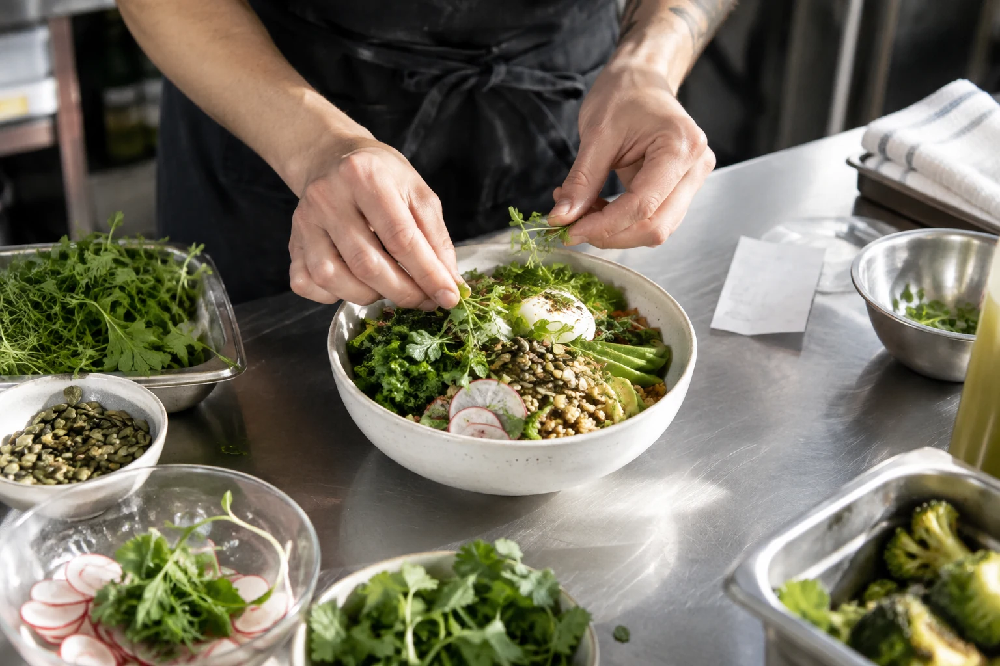

Frontend
Customer app · Vercel
AI BUSINESS STACK BUILDER
Stitchr selects the right tools, connects them, and creates your customer app and business dashboard. No code required.
See an idea come together ↓ONE IDEA. EVERY CONNECTION.
The tools, the workflows, and the interfaces.
Stitchr brings them together.
“I want to sell fresh meals online and manage my kitchen in one place.”
Customer app · Vercel
Database + auth · Supabase
Checkout · Stripe
Customer support · OpenAI
Team notifications · Slack
Revenue + workflow analytics
FROM IDEA TO APPLICATION
Turn your business idea into a clear set of requirements.
Choose the right tools and assemble the complete stack.
Connect the data, workflows, and interfaces into one app.
03 / YOUR BUSINESS, BUILT
Your customers get a seamless app.
You get one place to run it all.

Fresh. Local. Made for you.Roasted greens, grains & a little goodness.
Try it. Watch the dashboard update.
Browse. Order. Pay. Track.
Customers. Revenue. Operations. Analytics.
Illustrative product preview. Sample actions run locally; no payments or external tools are connected.
THE STITCHR APPROACH
One business idea. One connected application.
Explore another business ↗